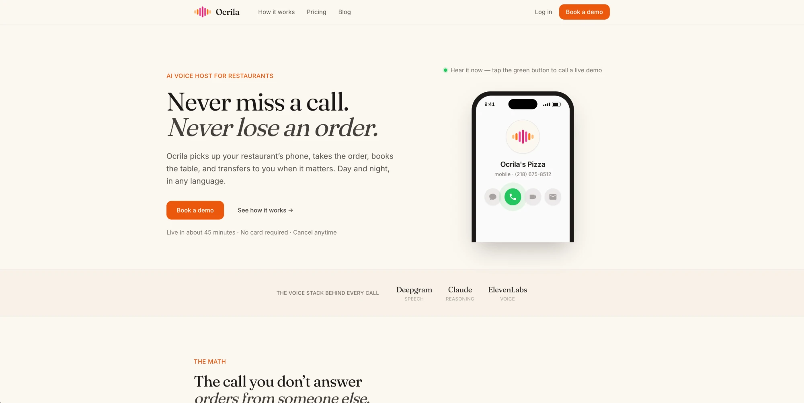
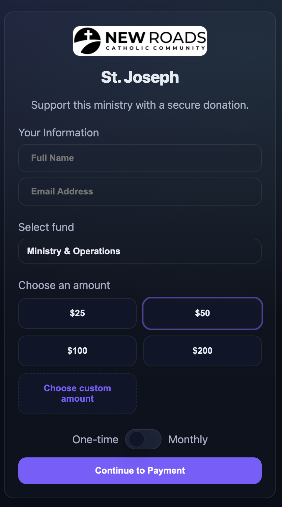
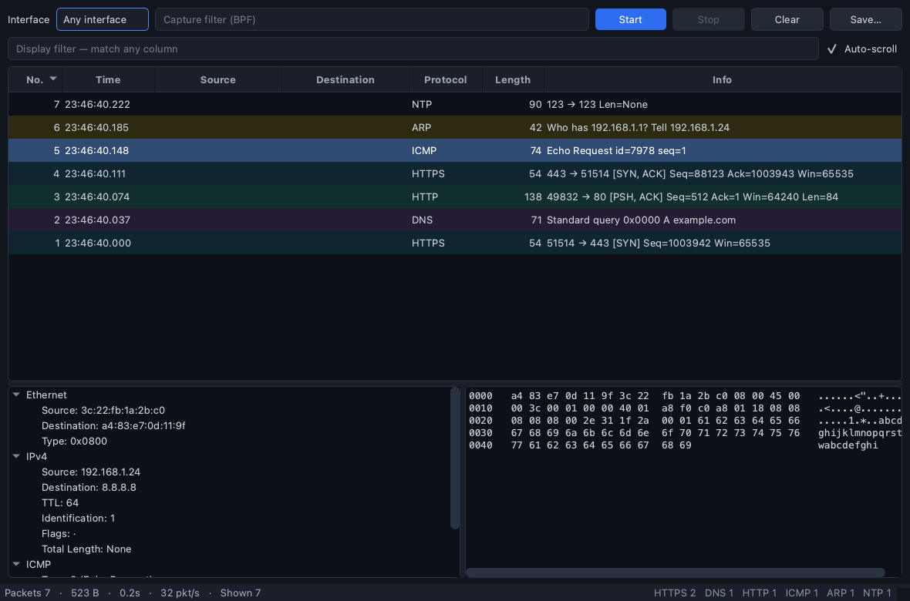
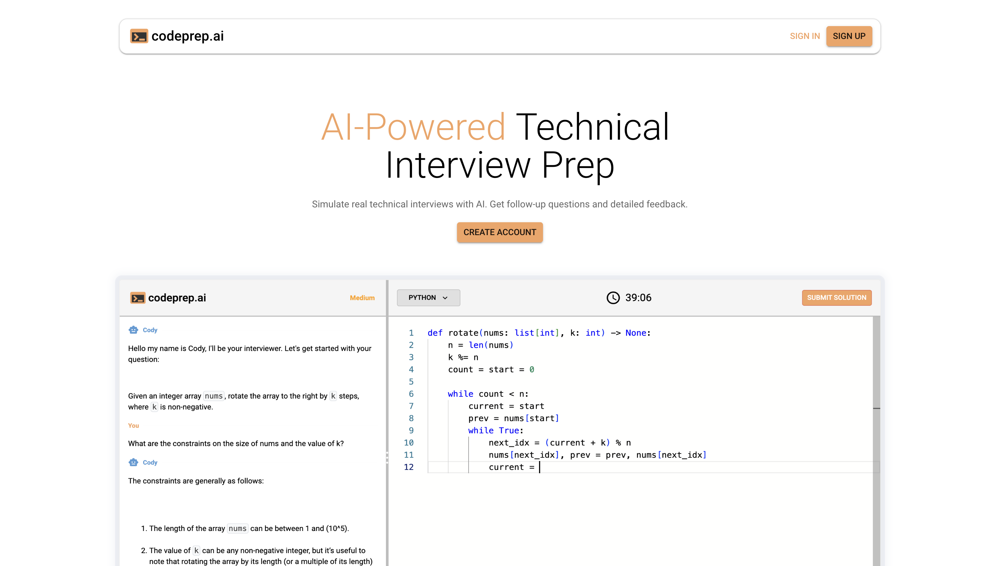
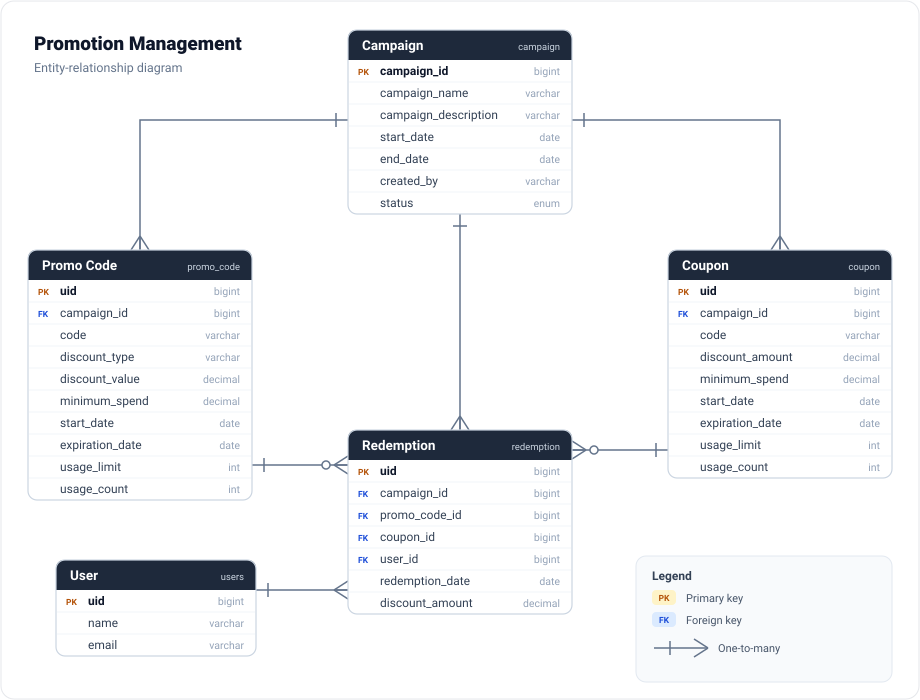
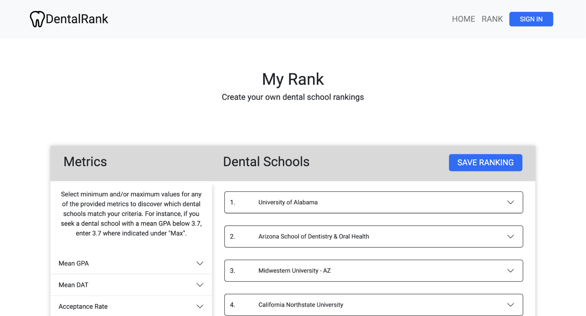
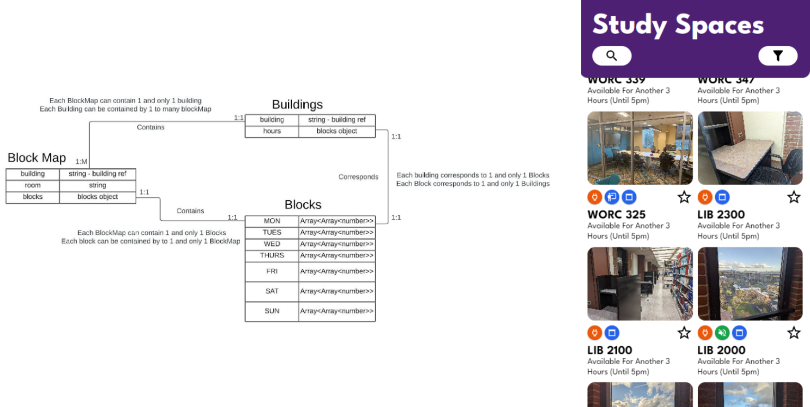
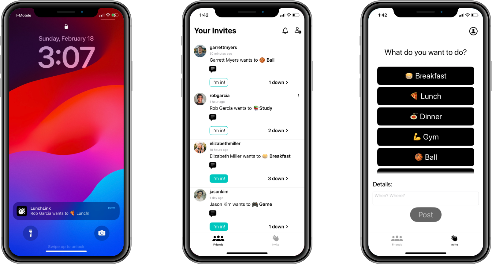

Ocrila
Ocrila is an AI voice host for restaurants that I'm building right now. It answers the restaurant's phone, takes orders, books tables, and answers questions about things like hours and the menu, and it passes the call to a real person when one is needed. It runs day and night and can handle callers in different languages. For the voice side I'm using Deepgram for speech-to-text, Claude to handle the responses, and ElevenLabs for the voice.

Kind Offering
Kind Offering is an online giving platform I built for churches to collect donations. People can give with a card, Apple or Google Pay, or straight from their bank account through ACH, which keeps the fees down. I built the backend with Java and Spring Boot and a Postgres database, the frontend with Angular, and the payments go through Stripe. It's all containerized with Docker.

Packet Sniffer
This is a desktop app I made to watch the network traffic on my machine in real time. You pick a network interface, hit start, and it grabs packets as they come in and shows the source, destination, protocol, and size for each one. While it's running it also keeps a running count of stuff like which protocols show up the most and the busiest addresses on the network. I wrote it in Python, using Scapy for the actual packet capture and PyQt6 for the interface.

CodePrep.ai
CodePrep puts you through a mock technical interview with an AI interviewer. It gives you a problem, you write and run your solution in the editor, and it asks follow-up questions as you go like a real interviewer would, then scores you and gives feedback at the end. The interviewer talks to you in real time over websockets, and the questions and feedback come from the OpenAI API. I built the frontend in React with the Monaco editor for the code panel, and the backend in Python and Flask with Postgres.

Promotion Management
A backend system I built for creating and tracking marketing promotions. You set up a campaign, create coupons and promo codes under it, and it records every redemption so you can see what's getting used and what isn't. It's a REST API written in Java and Spring Boot, backed by Postgres through JPA and documented with Swagger. I also put together a small React frontend to manage it all from the browser.

DentalRank.us
DentalRank.us is a web application I built for aspiring dental students to browse and compare dental schools. They can filter schools by median GPA and DAT scores of accepted students for the previous year and stuff like that. The frontend I built using React and a Node.js and Express backend.

Study space finder
Study Spaces was an app I built with some friends at UMass. We were able to get the class schedules from the university which we used to build an app to let students know which classrooms were available to study in. I worked on the backend which was built using Node.js and Express.

LunchLink
LunchLink was an iOS application to let users create an manage events with their friends. The idea was to quickly be able to send a notification out to all your friends quickly that you are looking to do something like grab lunch or go to the gym. It was built using mostly Swift and SwiftUI as well as Firebase and Node.js.
